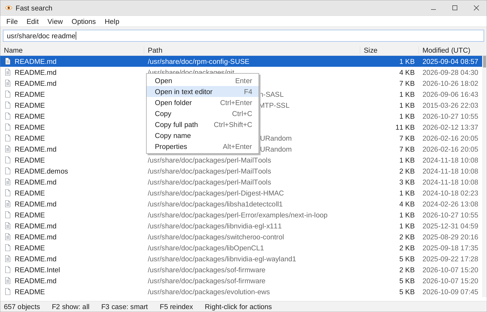
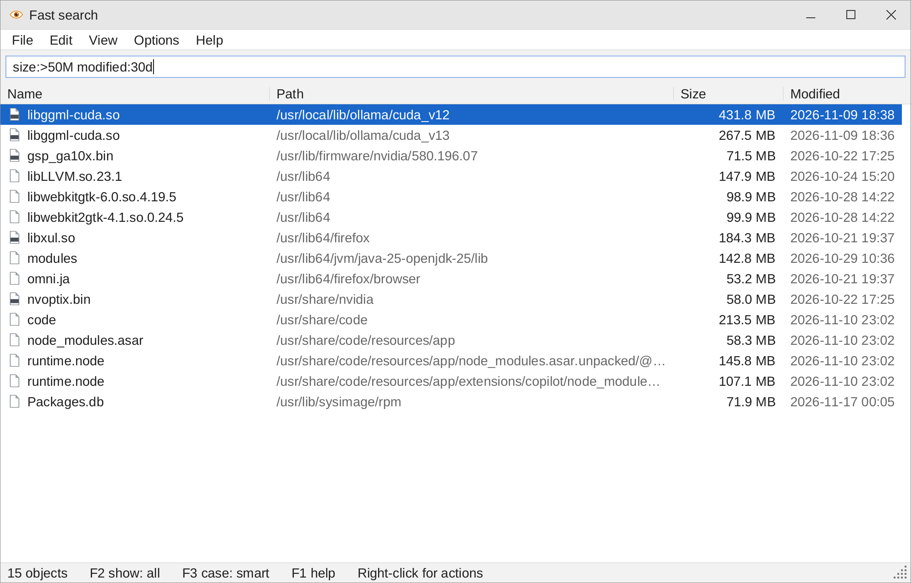
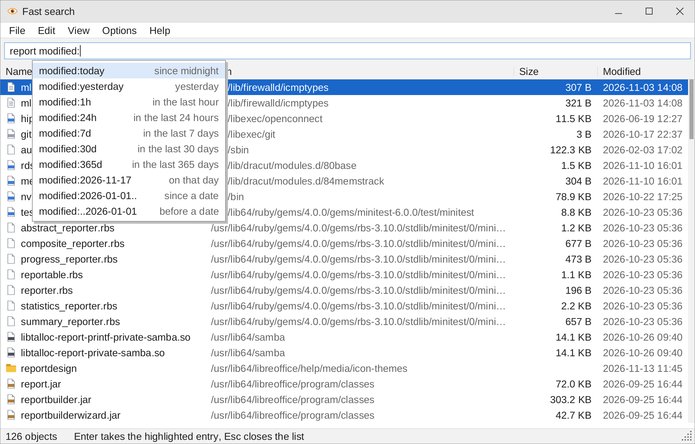
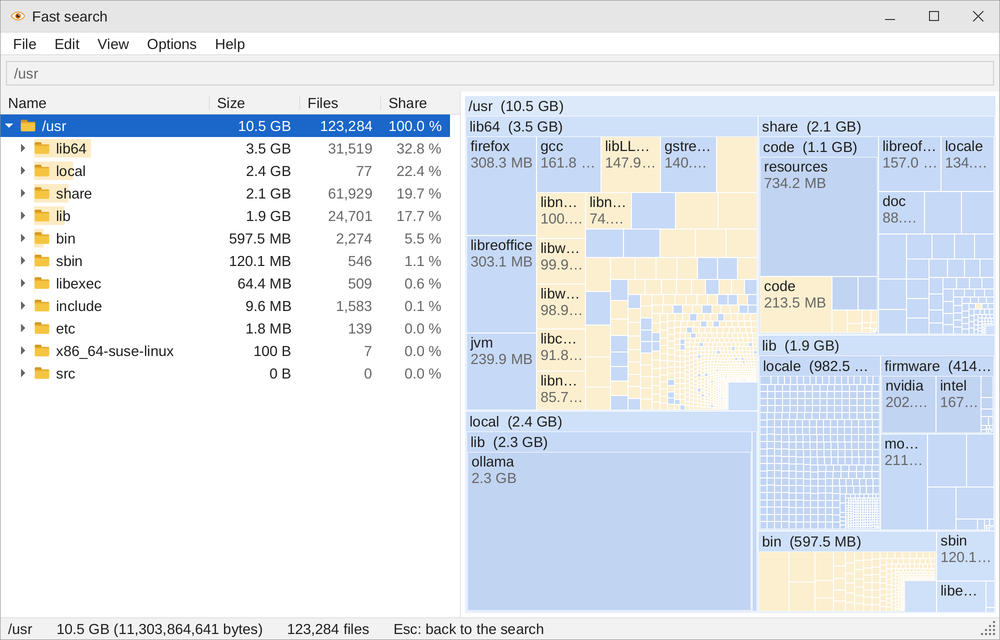

Fast search (ff) indexes every file name on your machine and searches them in milliseconds, and comes as a command, a window and a library, each a small static binary.

Searching the whole disk for usr/share/doc readme, with the actions menu open.
All three share one engine and one index, so results are identical everywhere.
ffSearch from the terminal, pipe results into other tools, open a file, show it in the file manager or print its properties.
ff-guiSearch as you type, with file icons, sortable columns, drag and drop, a right-click menu and an options window. A folder sizes view shows what takes the space. Light and dark themes; English, French, Spanish and Italian.
ff-coreA Rust crate and a static C library with a small header, to embed the same search in your own program.
Words are separated by spaces and must all match. Matching ignores case unless you type an uppercase letter. Press F1 in the window for this sheet.
| You type | You get |
|---|---|
report | names containing "report" |
*.pdf | names matching the wildcard (* any run, ? one character) |
src/main | a term with / is matched against the full path |
!draft | entries that do not match "draft" |
"my file" | quotes keep a space inside a term |
^IMG_\d+\.jpe?g$ | regular expressions, switched on with Ctrl+R (-R) |
port as a whole word | Ctrl+B (-w): finds "port 80" but not "report" |
Narrow the results by extension, size or date, mixed freely with words.
| Filter | Meaning |
|---|---|
ext:pdf | by extension; several ext:jpg;png;gif; compound ext:tar.gz |
size:>100M | larger than 100 MB; also >= < <= |
size:10M..1G | a size range |
modified:today | changed since midnight; also yesterday, 3h, 7d |
modified:2026-10-24 | changed on that day |
modified:2026-01-01..2026-06-30 | changed between two dates |
| To find | Type |
|---|---|
| Big files changed in the last month | size:>50M modified:30d |
| What filled the disk today | size:>100M modified:today |
| Big PDF invoices from the last month | invoice ext:pdf size:>1M dm:30d |
| Photos from one holiday | ext:jpg;png modified:2026-07-01..2026-07-15 |
| Videos over 1 GB | ext:mp4;mkv size:>1G |
| Old, large archives to clean up | ext:zip;tar.gz size:>500M modified:..2025-01-01 |
| Notes that are not drafts | notes !draft ext:md;txt |
| Empty files | size:0 |
dm: is short for modified:. In a terminal, put quotes around anything with >, <, * or !.

50M modified:30d' in the search box and fifteen results, each larger than 50 MB and changed in the last 30 days, with their path, size and date.">Filtering by size and by date at once: size:>50M modified:30d.
Press Alt+Down in the search box for a list of the filters and, after one of them, its usual values. The list narrows as you type; Enter takes the highlighted entry.

The completion list after modified:.
Press F6 and the results give way to folder sizes: a tree of folders with their total size, number of files and share of the folder above, and a map in which each tile's area is its size. It comes from the index, so it appears at once and reads nothing from the disk.

Folder sizes of /usr. Click a tile to go into that folder.
ff index # scan the disk once
ff report '*.pdf' # search
ff -l -s size -r -n 10 '*.iso' # ten largest ISOs, with size and date
ff -o notes.txt # open the first result
ff --open-folder notes.txt # show it in the file manager
ff -p notes.txt # print its propertiesOn its own the index is a snapshot. An optional daemon keeps it current, so a window left open for days always shows the disk as it is.
ffd daemonScans once, then lets the kernel (fanotify) report every create, delete, rename and finished write. It checks the disk for what changed and patches the index.
/run/ff/index.dbff and ff-guiRead the published index. They never talk to the daemon and never need root. The window reloads within about three seconds of a change.
Drives. The daemon follows drives being mounted, unmounted and plugged in. Under Options → Drives… you choose which drives are indexed and which are followed live. Unmounted ext2/3/4 and NTFS drives can be indexed as well: the daemon reads their file tables directly, without mounting them.
Privacy. The daemon sees every file. Everyone in the group you allow to read the index can search the names of all files on the system, including files in folders they cannot open. Only names, sizes and dates are exposed, never contents.
Packages for 64-bit Intel/AMD Linux, built from the latest release. Each contains the ff command, the Fast search window and the ffd daemon; nothing else needs installing.
curl -LO https://github.com/khunder/fast-search/releases/latest/download/fast-search-amd64.deb
sudo apt install ./fast-search-amd64.debcurl -LO https://github.com/khunder/fast-search/releases/latest/download/fast-search-x86_64.rpm
sudo dnf install ./fast-search-x86_64.rpmcurl -LO https://github.com/khunder/fast-search/releases/latest/download/fast-search-x86_64.rpm
sudo zypper install --allow-unsigned-rpm ./fast-search-x86_64.rpmgit clone https://github.com/khunder/fast-search
cd fast-search/packaging/arch
makepkg -sicurl -LO https://github.com/khunder/fast-search/releases/latest/download/fast-search-x86_64.AppImage
chmod +x fast-search-x86_64.AppImage
./fast-search-x86_64.AppImageDownload with the button and install the file yourself, or copy the commands, which download and install in one go. With the AppImage, ./fast-search-x86_64.AppImage ff foo runs the command instead of the window.
Prefer plain files? The tar.gz holds just the three binaries. All versions are on the releases page. The packages are not signed.
ff index # scan the disk once
ff-gui # or start "Fast search" from the applications menuFor always-current results, switch on Options → Live updates service in the window; it asks for your password and installs the daemon.
On GNOME, Options → Desktop adds a keyboard shortcut that opens the window from anywhere: Alt+E, or keys of your choice.
You need Rust. No C compiler is needed.
git clone https://github.com/khunder/fast-search
cd fast-search
cargo build --release # rustup fetches the pinned toolchain by itself
# the binaries: ff, ff-gui, ffd
ls target/x86_64-unknown-linux-musl/release/
# optional: build the packages yourself
packaging/build-packages.shThe window runs natively on Wayland (GNOME, KDE, Hyprland, Sway) and on X11, and picks the right one at start-up.
It finds files by name and path. It does not search inside files.